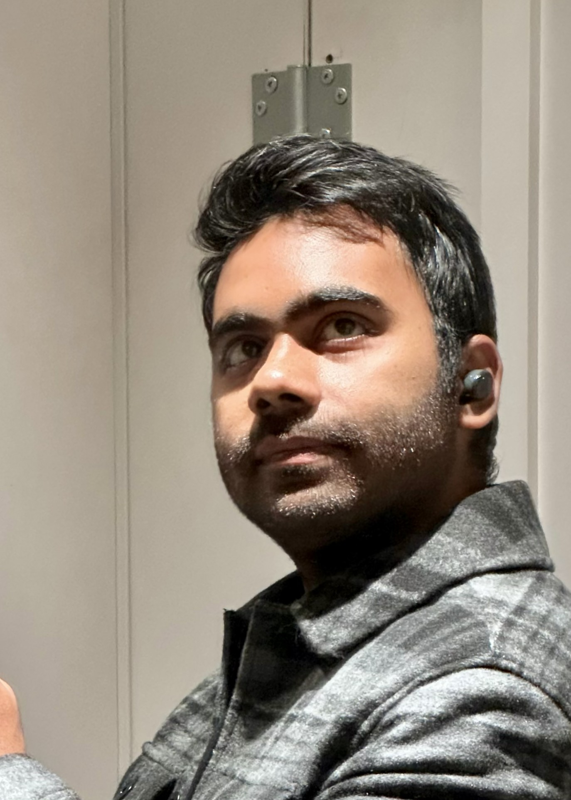

The Person Behind the Code.
My journey as a computer science professional began in the vibrant city of Chittagong, Bangladesh. It's a path defined by a relentless curiosity about how the world works, a drive that eventually took me from the computer labs of North South University to the historic streets of London.
Through this international transition, I've developed a unique perspective on how technology can bridge cultures and solve everyday problems.

My Philosophy
I believe that technology should be an extension of human capability. My work focuses on creating AI systems that are not just powerful, but also intuitive, accessible, and designed to enhance human well-being. I aim to improve the world through the power of technology.
Research Interest
I’m fascinated by how artificial intelligence can learn from both images and text, helping computers understand and create like humans do. I explore ways that smart algorithms can work together to solve complex problems, and how AI can open new doors for creativity.
What Drives Me
I’m driven by curiosity and a passion for turning ideas into technology that makes a difference. I enjoy blending data science with software engineering to build solutions that are both powerful and practical. Whether it’s creating apps or training AI models, I aim to enhance human well-being.
Behind the Scenes
Beyond AI, I explore the mysteries of psychology, neuroscience, and the cosmos. I'm also an active movie buff reviewing films on IMDb and a music lover curating Spotify playlists for every mood.